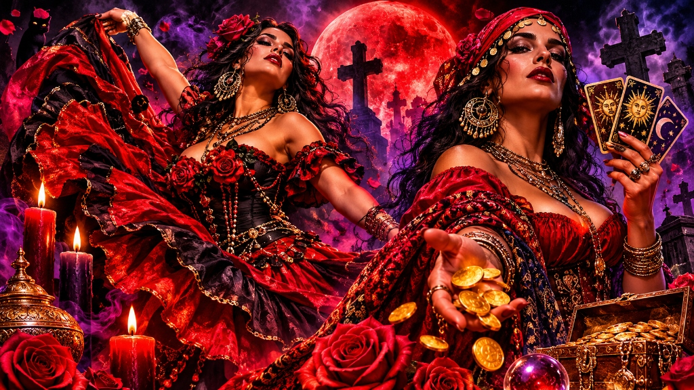

Pombagira Sete Saias e Pombagira Cigana: Alegria, Liberdade, Prosperidade e os Caminhos do Feminino
Sete Saias e Pombagira Cigana: alegria como resistência e liberdade de escolher o próprio caminho, sem reduzir nenhuma das duas a um estereótipo.

Pombagira Sete Saias e Pombagira Cigana: Alegria, Liberdade, Prosperidade e os Caminhos do Feminino • Acervo Pombagiras.com
Introdução
Dentro do universo espiritual das Pombagiras, Sete Saias e Pombagira Cigana representam duas expressões distintas de força, movimento e autonomia feminina. Embora ambas sejam frequentemente associadas à liberdade, à expansão e à capacidade de transformar caminhos, suas simbologias apresentam particularidades que merecem ser compreendidas com atenção.
É importante observar que não existe uma única interpretação universal dessas entidades. Suas características, histórias, formas de manifestação e fundamentos podem variar conforme a tradição, a casa religiosa, a linhagem espiritual e os ensinamentos transmitidos por cada comunidade. Portanto, as descrições a seguir abordam principalmente seus aspectos simbólicos e arquetípicos, sem pretender estabelecer uma classificação definitiva.
1. Pombagira Sete Saias: a força da alegria, do movimento e da intensidade
A Pombagira Sete Saias é frequentemente associada ao movimento, à expansão, à expressividade e à multiplicidade dos caminhos. Seu próprio nome carrega uma simbologia significativa: as sete saias podem representar diferentes dimensões da existência feminina, diferentes experiências, possibilidades e formas de atravessar os desafios da vida.
A saia, nesse contexto, não é apenas uma peça de vestuário ou um elemento estético. Ela representa identidade, presença, feminilidade, liberdade corporal e expressão. Quando gira, movimenta-se e acompanha a dança, simboliza a vida que não permanece parada, a energia que circula e a capacidade de transformar situações por meio da ação.
O significado das sete saias
O número sete possui grande presença nas simbologias religiosas e espirituais brasileiras. É frequentemente relacionado à totalidade, aos ciclos, à multiplicidade e à organização de diferentes forças.
Na leitura simbólica de Sete Saias, cada saia pode ser compreendida como uma representação de uma experiência ou dimensão da existência:
- Alegria: a capacidade de preservar a vitalidade mesmo diante das dificuldades.
- Movimento: a recusa à estagnação e a disposição para transformar a própria realidade.
- Versatilidade: a habilidade de lidar com diferentes situações sem perder a própria essência.
- Expansão: a abertura para novas experiências e possibilidades.
- Expressividade: a liberdade de demonstrar sentimentos, desejos e personalidade.
- Intensidade: a presença marcante e a capacidade de viver com envolvimento.
- Renovação: a possibilidade de abandonar ciclos antigos e iniciar novos caminhos.
Essas interpretações não constituem uma divisão ritual obrigatória. São possibilidades de leitura do simbolismo associado ao nome e à imagem de Sete Saias.
Alegria não significa ausência de sofrimento
Um dos aspectos mais interessantes dessa Pombagira é sua associação com a alegria. Entretanto, seria superficial interpretar essa característica como simples diversão, festas ou comportamento expansivo.
A alegria, em uma perspectiva espiritual e simbólica, também pode representar resistência.
Uma mulher que atravessou dificuldades, perdas, rejeições e limitações pode encontrar na dança, na música e na expressão corporal uma maneira de recuperar sua presença no mundo.
Nesse sentido, Sete Saias representa uma feminilidade que não aceita ser reduzida ao sofrimento. Sua simbologia lembra que a vida não precisa ser definida exclusivamente pelas dores que alguém experimentou.
Dançar, sorrir, celebrar e ocupar espaços também podem ser manifestações de reconstrução, dignidade e liberdade.
A dança e a abertura dos caminhos
A dança é uma das imagens mais recorrentes relacionadas à representação de Sete Saias. O movimento circular das saias pode ser interpretado como uma metáfora da transformação: aquilo que estava parado começa a circular; aquilo que parecia encerrado encontra novas possibilidades.
A abertura de caminhos, nesse contexto, não deve ser compreendida apenas como a obtenção de vantagens materiais ou a solução imediata de problemas.
Ela também pode representar a capacidade de reconhecer oportunidades, abandonar situações limitantes, recuperar a confiança e tomar decisões.
A intensidade atribuída a Sete Saias está justamente nessa disposição de movimentar a existência.
Frases que expressam sua simbologia:
- “Cada saia que eu rodo é um caminho que eu abro.”
- “A alegria é o meu maior feitiço.”
- “Não nasci para permanecer onde minha alma não pode dançar.”
- “Quem conhece o próprio valor não precisa pedir licença para existir.”
O que Sete Saias simboliza na experiência feminina?
Sete Saias pode ser interpretada como uma representação da mulher que não deseja viver aprisionada a uma única identidade, comportamento ou expectativa social.
Ela expressa a multiplicidade feminina: a mulher que pode ser alegre e séria, delicada e intensa, expansiva e reservada, sem que essas características sejam necessariamente contraditórias.
Sua simbologia também permite uma reflexão sobre mulheres historicamente reprimidas por expressarem sua sensualidade, sua personalidade, sua liberdade corporal e sua independência.
A alegria, nesse sentido, torna-se uma afirmação de existência.
2. Pombagira Cigana: liberdade, prosperidade e autonomia sobre o próprio destino
A Pombagira Cigana apresenta uma simbologia diferente. Sua representação está frequentemente associada à liberdade, à mobilidade, à intuição, à prosperidade, à leitura simbólica do destino e à independência.
É importante fazer uma distinção: a figura espiritual da Pombagira Cigana não deve ser confundida automaticamente com os povos ciganos, suas tradições culturais ou suas práticas religiosas. A identidade cigana possui uma história própria, marcada por diversidade, ancestralidade e também por séculos de perseguição e preconceito.
A associação simbólica entre a Pombagira e a imagem da mulher cigana precisa, portanto, ser abordada com respeito, evitando transformar uma cultura real em um conjunto de estereótipos.
A liberdade como princípio fundamental
A liberdade é um dos elementos centrais dessa representação.
A imagem da mulher que percorre caminhos, atravessa fronteiras e não se submete facilmente às imposições externas aparece como uma metáfora de autonomia.
A Pombagira Cigana, nessa leitura, representa a mulher que deseja escolher seu próprio destino, construir sua trajetória e preservar sua independência.
Não se trata simplesmente de viajar ou mudar de lugar. Trata-se de não permitir que outras pessoas determinem integralmente seus caminhos.
Essa liberdade pode se manifestar nas relações afetivas, nas escolhas profissionais, na vida material e na maneira como cada pessoa constrói sua identidade.
A leitura do destino e a intuição
Outro elemento frequentemente associado à Pombagira Cigana é a leitura do destino.
Cartas, moedas, mãos, estrelas e outros elementos aparecem em diferentes representações populares relacionadas ao imaginário cigano. Entretanto, esses símbolos não devem ser tratados como atributos universais ou obrigatórios de todas as entidades que recebem essa denominação.
Em uma interpretação simbólica, a leitura do destino representa a capacidade de observar possibilidades, reconhecer sinais, interpretar circunstâncias e compreender que as escolhas presentes influenciam os caminhos futuros.
Existe uma diferença importante entre destino e determinação absoluta.
A pessoa pode encontrar condições que não escolheu, enfrentar acontecimentos inesperados e carregar consequências de experiências anteriores. Ainda assim, conserva alguma capacidade de decidir como responder a essas circunstâncias.
Por isso, uma das imagens mais expressivas relacionadas à Pombagira Cigana é a da mulher que conhece os caminhos, mas não entrega a outra pessoa o direito de escrever sua história.
Prosperidade: muito além do ouro e do dinheiro
A prosperidade é outro aspecto importante dessa simbologia.
A imagem da mulher adornada com joias, tecidos, moedas e elementos de riqueza aparece frequentemente em representações populares da Pombagira Cigana.
Contudo, reduzir sua simbologia à riqueza material seria limitar sua compreensão.
Prosperidade também pode significar:
- Independência financeira e capacidade de sustentar as próprias escolhas.
- Reconhecimento do próprio valor.
- Construção de oportunidades.
- Segurança material e emocional.
- Capacidade de administrar recursos.
- Liberdade para abandonar relações de dependência.
- Abundância de experiências, conhecimentos e possibilidades.
O ouro, nessa interpretação, pode representar tanto riqueza material quanto consciência do próprio valor.
A prosperidade não precisa significar acumular bens a qualquer custo. Pode significar alcançar uma condição na qual a pessoa tenha mais autonomia para decidir sobre sua própria vida.
O desapego e a coragem de partir
A mobilidade atribuída à imagem da Pombagira Cigana também permite uma reflexão sobre o desapego.
Existem momentos em que permanecer em determinado lugar, relacionamento ou situação significa abandonar a própria liberdade.
Saber partir pode ser tão importante quanto saber chegar.
O desapego, nessa perspectiva, não significa ausência de sentimentos ou incapacidade de construir vínculos. Significa reconhecer que o amor, a segurança e a estabilidade não deveriam exigir a anulação da própria identidade.
A mulher simbolizada pela Cigana não precisa permanecer onde não existe respeito, reciprocidade ou possibilidade de crescimento.
Sua liberdade está relacionada à capacidade de escolher, inclusive quando a escolha exige mudanças difíceis.
Frases que expressam sua simbologia:
- “Meu destino está escrito nas estrelas, mas quem segura a caneta sou eu.”
- “Ouro brilha, mas a liberdade ilumina.”
- “Não confunda minha liberdade com ausência de raízes.”
- “Conheço o valor daquilo que conquisto e a coragem necessária para recomeçar.”
A Pombagira Cigana e a autonomia feminina
A figura da Pombagira Cigana também pode ser compreendida como uma representação simbólica da mulher que não aceita viver sob controle.
Ela não precisa justificar constantemente suas escolhas, não depende da aprovação alheia para reconhecer seu valor e não transforma relacionamentos em prisões.
Sua imagem permite discutir questões importantes: independência econômica, liberdade afetiva, autonomia sobre o corpo, direito de escolha e resistência às imposições sociais.
É uma simbologia que coloca a mulher diante de uma pergunta fundamental:
De que adianta conquistar o mundo se você não tem liberdade para escolher o próprio caminho?
3. Sete Saias e Cigana: quais são as diferenças entre elas?
Embora compartilhem elementos como movimento, liberdade, intensidade e expansão, Sete Saias e Pombagira Cigana não representam exatamente a mesma simbologia.
A principal diferença está na ênfase de suas representações.
Quadro comparativo:
- Simbolismo central — Sete Saias: Movimento e multiplicidade | Cigana: Liberdade e autonomia
- Energia arquetípica — Sete Saias: Alegria e intensidade | Cigana: Independência e prosperidade
- Elemento expressivo — Sete Saias: Dança e movimento das saias | Cigana: Caminhos, mobilidade e símbolos de leitura
- Reflexão feminina — Sete Saias: Direito de expressar a própria natureza | Cigana: Direito de escolher o próprio destino
- Transformação — Sete Saias: Romper a estagnação | Cigana: Romper dependências e limitações
- Prosperidade — Sete Saias: Expansão das possibilidades | Cigana: Abundância e autonomia material
- Mensagem simbólica — Sete Saias: A vida precisa continuar em movimento | Cigana: A liberdade precisa permanecer nas próprias mãos
Uma maneira simples de compreender essa distinção é observar que Sete Saias representa, simbolicamente, a força de movimentar a vida, enquanto a Pombagira Cigana representa a liberdade de escolher para onde essa vida será conduzida.
Uma trabalha simbolicamente com a expansão e a expressão; a outra, com a autonomia e a escolha.
Isso não significa que suas atribuições espirituais estejam limitadas a esses aspectos. São interpretações didáticas, úteis para compreender suas diferenças sem estabelecer fronteiras rígidas entre entidades.
4. O que essas duas Pombagiras ensinam sobre liberdade feminina?
Sete Saias e Pombagira Cigana permitem uma reflexão que ultrapassa suas representações estéticas e populares.
Ambas podem ser compreendidas a partir de uma questão histórica: durante muito tempo, a liberdade feminina foi tratada como ameaça à organização social.
A mulher que dançava, que expressava sua sensualidade, que não se submetia a relacionamentos abusivos, que administrava seus próprios recursos ou que decidia seu destino frequentemente era julgada e marginalizada.
A simbologia dessas duas Pombagiras permite observar diferentes dimensões dessa resistência.
Sete Saias representa a mulher que não aceita perder sua alegria, sua expressividade e sua intensidade para satisfazer as expectativas de outras pessoas.
A Cigana representa a mulher que não entrega sua autonomia, que reconhece o próprio valor e que não confunde segurança com aprisionamento.
Uma afirma a liberdade de ser. A outra afirma a liberdade de escolher.
E essa distinção é especialmente importante: não existe verdadeira liberdade quando uma pessoa pode escolher seu caminho, mas não consegue expressar quem realmente é.
Considerações finais
Pombagira Sete Saias e Pombagira Cigana representam duas expressões simbólicas particularmente interessantes dentro do universo das Pombagiras.
A primeira nos convida a compreender a alegria como força de resistência, o movimento como transformação e a multiplicidade como parte da identidade feminina.
A segunda nos conduz à reflexão sobre liberdade, autonomia, prosperidade e responsabilidade pelas próprias escolhas.
Não devemos reduzir Sete Saias à mulher festeira, nem a Cigana à mulher que lê cartas ou usa joias. Essas imagens são apenas representações parciais de simbologias muito mais amplas.
Também não devemos confundir características atribuídas popularmente a determinadas entidades com regras universais de incorporação ou fundamentos religiosos. Cada tradição possui seus próprios conhecimentos, experiências e formas de transmissão.
No fundo, ambas nos colocam diante de duas perguntas fundamentais:
Sete Saias pergunta: você ainda tem liberdade para ser quem é?
Pombagira Cigana pergunta: você tem coragem de escolher o caminho que deseja seguir?
Talvez seja justamente nessa combinação que suas simbologias se encontram: a liberdade de existir plenamente e a coragem de conduzir a própria história.
Porque não basta abrir caminhos. É preciso ter autonomia para escolher por quais deles caminhar.
Pesquisa e ensaio cultural independente | Pombagiras.com | Por Alexia Melusine